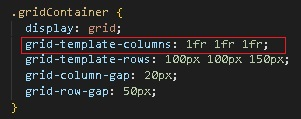

HTML

CSS

.обращаемся к селектору {
определяем его - display: grid;
мы создаем колонки (3шт и даем размер в fr)
определяем ряды (3шт и даем размер высоты ряда)
отступы между колонками (по 20рх)
отступы между рядами (по 50 рх)
}
Мы видим, что контейнер полностью заполнился,
fr - это единица измерения в grid
Мы поделили весь контейрен на три равные колонки,
они будут адаптироваться
(могли написать 33,333% 33,333% 33,333%)
определяем его - display: grid;
мы создаем колонки (3шт и даем размер в fr)
определяем ряды (3шт и даем размер высоты ряда)
отступы между колонками (по 20рх)
отступы между рядами (по 50 рх)
}
Мы видим, что контейнер полностью заполнился,
fr - это единица измерения в grid
Мы поделили весь контейрен на три равные колонки,
они будут адаптироваться
(могли написать 33,333% 33,333% 33,333%)